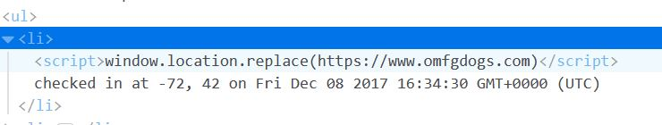

My partner wrote the serve-side code for determining locations of landmarks and fellow Tufts students within a 1 mi radius based on client-side application posting information such as latitude, longitude, and login. The data was then to be stored on a database for the server-side code to access and process. As the security contractor I am tasked with finding vulnerabilities with the server-side code by hacking my partner's code.
My partner's code takes in parameters for login, latitude, and longitude (step 1), stores it in mongo database (step 3), and then pulls data from the mongo database, and send the data to be presented on client-side browser window (step 3). I tried to look for opportunities to inject malicious code at each of these 3 steps.
The code on the server-side included no checks against malicious code being passed on as harmless text. This issue persisted when the seemingly harmless text was fetched back from the database to be displayed on any web browser. Additionally, database stored any information passed into it, which allowed garbage information to be stored without checks of any kind. This would use of precious storage space.
At step 1, the data that is sent to server has login converted to string, and the lat/lng validated as being floats. Therefore, at step 1, the login data seemed to pose a vulnerability for injecting malicious code (Issue #1). Resolution: Character validation when storing data in server-side variables. At step 2, the login, now converted to string, is stored on mongo without character validation (allowing javascript code to survive this process). At this point, there is no check against an internal database that the login is a legitamate login. With a limit on the database storage, there may be shell-code that can use an infinite loop to overpopulate the database with garbage entries (Issue #2). See hack.sh code attached. I did not want to execute it, as I could not immediately think of a way to undo the attack. Resolution: Have a list of legal logins to check all login posts against. At step 3, the mongo database records are broken down into string snippets and sent back to the client's web browser. At this stage, there is no character validation to remove angled brackets, etc that can allow javascript injection (XSS). I inserted a redirect to a different website (Issue #3).  Resolution: Use character validation before the login data is sent to client-side browser window.
In the future, character validation should be included in both steps 1 and step 3 to ensure malicious code is never stored in databases. A list of all Tufts usernames should be created that can be used to check all logins against, which would be inexpensive in terms of storage space.
1. https://www.exploit-db.com/docs/21013.pdf 2. https://appendto.com/2016/04/javascript-redirect-how-to-redirect-a-web-page-with-javascript/